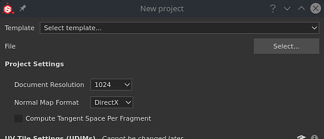
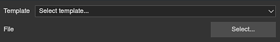
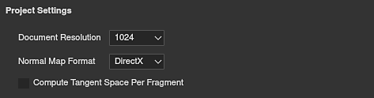
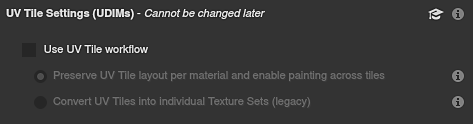
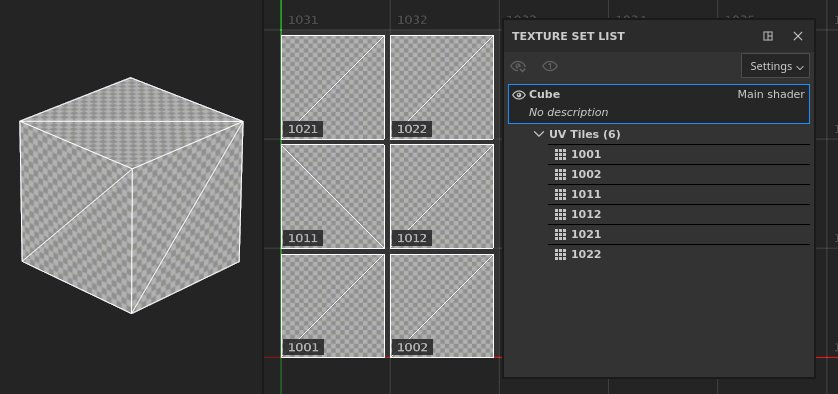
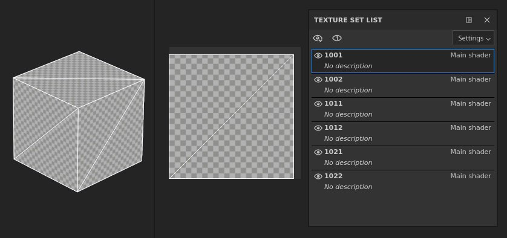
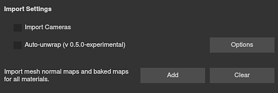
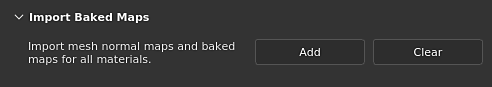
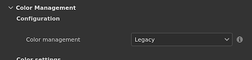

Parameter
Project Creation

The New project window allows you to create a project file to store your 3D model and its texturing information.
A new Texture Set is created per material definition found on the imported 3D model. This means multiple objects can be imported through a single file (even with overlapping UVs) if they have different materials.
Creating a New Project
To create a new project, click on File > New or use keyboard shortcut Ctrl + N.
Below is an explanation of all the parameters available in the New Project window.
Base Settings

|
|
Description |
|---|---|
|
Template |
Specify a template that will define the default settings of the project. A template contains the following parameters:
|
|
File |
Click on the "Select" button to specify a 3D model file to load. A list of supported file formats is available here. |
File type-specific settings
When a USD is selected, other file type-specific settings become available.

| Parameter | Description |
|---|---|
| Scope and variants | Select a specific part of a USD file. By default, this is set to 'Root', which means the entire USD file will be used to create the Painter project. Scope and variants can be changed after project creation in Project configuration settings. Note that -
|
| Subdivision level | For geometry that should be subdivided, this setting allows you to specify how much you would like to subdivide your mesh for texturing in Painter. If subdivision is explicitly set to 'none' within the USD file, this setting is grayed out. Subdivision levels can be changed after project creation in Project configuration settings. |
| Frame | For USD files where animations are detected, this setting allows you to select the frame which will be used to create your Painter project. If there is no animation in the selected USD file, this setting is grayed out. Frame can be changed after project creation in Project configuration settings. |
Project Settings

|
Parameter |
Description |
|---|---|
|
Document Resolution |
Define the default texture resolution of the project for each Texture Set. The resolution can go up to 4K (4096x4096 pixels) when working inside the application and 8K (8192x8192 pixels) when exporting. The resolution can be changed at any time later on via the Texture Set settings.
Note
8K export requires at least 2.5GB of VRam on the GPU to be available. |
|
Normal Map Format |
Defines the Normal map format for the project, can be either
Note
As a reminder:
|
|
Compute Tangent Space per Fragment |
If enabled, the Bitangents are computed in the fragment (pixel) shader instead of the vertex shader. This parameter impacts the way the Normal map is decoded by the Shader in the viewport. Changing this settings will require to rebake the Normal map.
Note
As a reminder:
For more information see the Tangent Space page in the Bakers documentation. |
UV Tile Settings (UDIMs)

Note
These settings cannot be modified once the project has been created.
|
Parameter |
Description |
|---|---|
|
Use UV Tile workflow |
If checked, the imported mesh will be processed differently to allow painting outside the regular UV range (0-1). Projects using UDIM should enable this setting. The processing of the mesh may differ depending on the setting.
For more information, see the UV Tile documentation. |
|
Preserve UV Tile layout per materials and enable painting across tiles |
UV Tiles (UDIMs) are imported and grouped per material assignment on the mesh. This means a single Texture Set can contain multiple UV Tiles visible side by side in the 2D View. UV Tiles that are within the same Texture Set can be painted across seamlessly. 
|
|
Convert UV Tiles into individual Textures Sets (legacy)
|
UV Tiles (UDIMs) are separated into individual Texture Sets and renamed, ignoring any material assignments. Each UV Tile is moved to the UV [0-1] range to be paintable. 
|
Import Settings

|
Parameter |
Description |
|---|---|
|
Import Cameras |
If cameras are present in the mesh file, they will be imported into the project and accessible as presets for visualization.
Note
Substance 3D Painter doesn't support some cameras in certain conditions :
|
|
Auto-unwrap |
If enabled, missing UVs on the imported mesh will be generated. The processing may change depending on the settings selected via the Options button. For more information, see the Automatic UV Unwrapping documentation. |
Import baked maps

Use the Add button to load texture files as Mesh maps and automatically assign them in the Texture Set settings. A specific naming convention must be followed for the mesh maps to be automatically assigned to their Texture Sets. Mesh maps can also be baked directly inside the application; see the Baking documentation.
Naming convention: TextureSetName_MeshMapName
Example: DefaultMaterial_ambient_occlusion.png
List of supported Mesh maps and their naming:
| Mesh map | Filename convention |
|---|---|
| Ambient occlusion | ambient_occlusion |
| Curvature | curvature |
| Normal | normal_base |
| World Space Normal | world_space_normals |
| ID | id |
| Position | position |
| Thickness | thickness |
Physical size
Physical size settings allow you to adjust how Painter determines the physical size of your mesh in real world units. This is useful to make sure that materials are applied at a realistic scale.
- Use mesh file's internal unit scale: Most file types include information about the physical size of the object as it was exported from the 3D modeling application. With this option selected, Painter will use this information from the imported file.
- Custom unit scale: Overwrite the unit scale of the imported file, or if no unit scale is included, use the custom entry box to adjust the size of a single "unit".
- Switch fill layer scaling to Physical size when assigning materials: If this is enabled, materials that have physical size information can adjust their scaling to match the physical size of the surface to which they're being applied.
Color management

This section controls the project's color management settings. By default, it is set to Legacy (sRGB / linear workflow).
Take a look a the color management documentation to learn more about how to use this workflow and what the settings are doing.